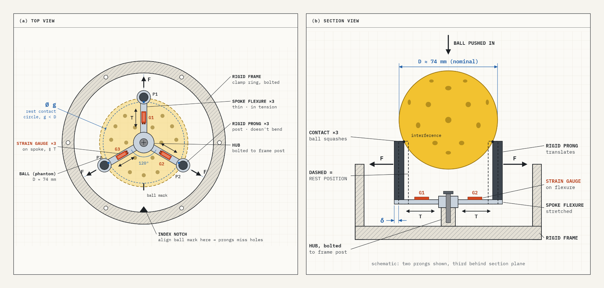
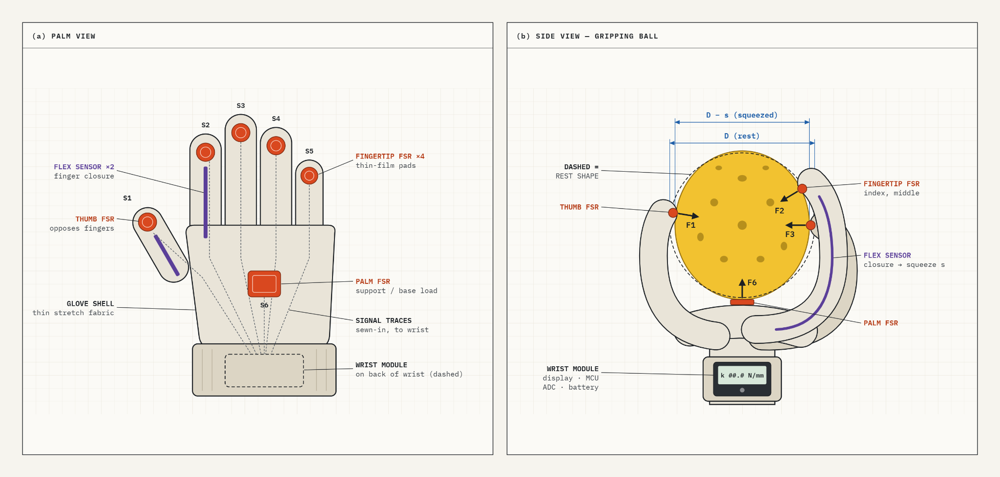
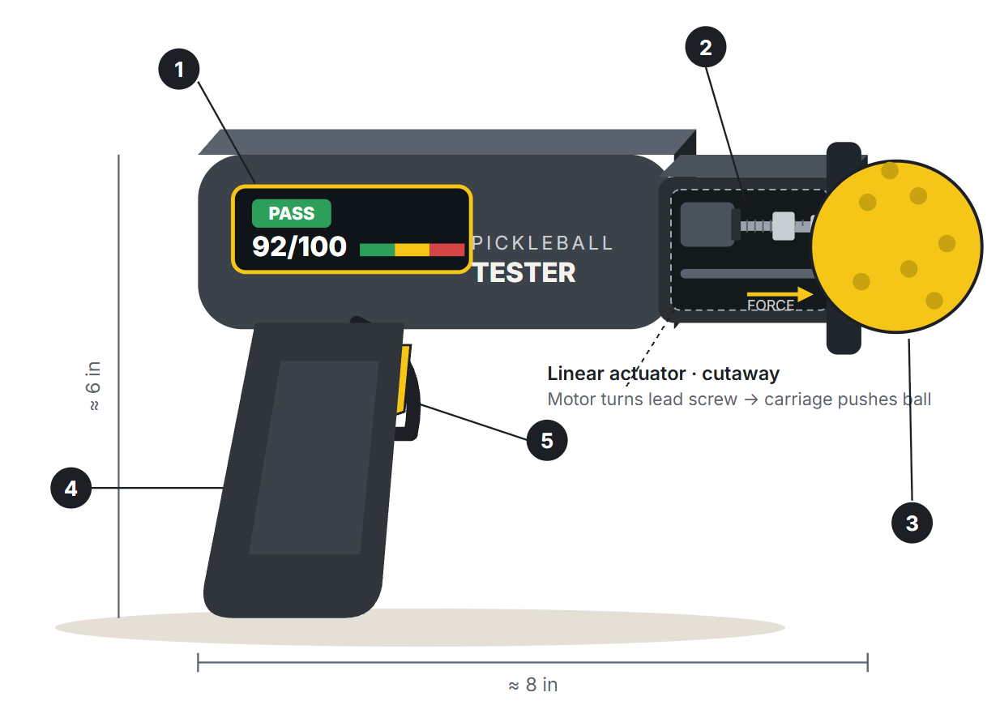
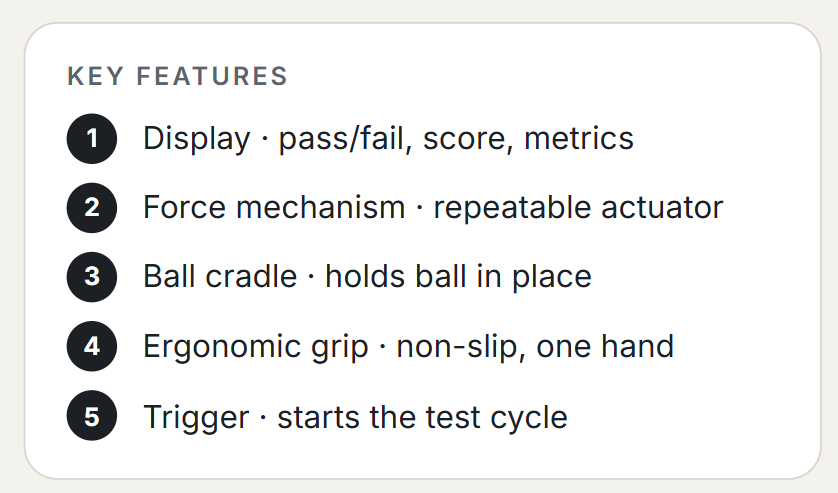

Gate Review 2 · Concept & Prototyping
Top Concepts
Five concepts emerged from the design-space exploration, one for each team member. They differ in what senses the ball (a load cell, strain-gauge flexures, sensors on the hand, a handheld actuator, or a full force–deflection curve) and in who or what applies the load, not just in shape.
| Concept | Sensing principle | What loads the ball | Form | Origin in the methods |
|---|---|---|---|---|
| A. Rolling Compression Station | Stiffness at several positions (load cell) | Motor, fixed displacement | Bench station | Squeeze branch; rotating cradle from the tap gap |
| B. Three-prong fork | Stiffness from prong force (strain gauges) | User push into a fixed interference | Compact ring | Squeeze branch; fixed displacement from the functional decomposition |
| C. Instrumented glove | Grip force and finger closure (FSRs, flex sensors) | The player's hand | Wearable | Squeeze branch, “by hand with a force-sensitive resistor” |
| D. Test gun | Force and deformation (handheld actuator) | Motor, trigger-started | Handheld | Brainstorming forms; squeeze branch |
| E. CubeClamp | Stiffness, hysteresis and bulge from one squeeze (flexure gauges, encoder) | Two motors, to a set force | Benchtop cube | Brainstorm sketches; lab compression testers; AI animation |
Table 9. The five top concepts at a glance.
Concept A: Rolling Compression Station

Table 10. Concept A parts (callouts 1–18)
| # | Part | # | Part |
|---|---|---|---|
| 1 | Compression stepper, NEMA 17, integrated T8×2 lead screw | 10 | Hard-stop collar, limits squeeze to 5 mm |
| 2 | Motor plate, bolted to the crossbar | 11 | Top endstop microswitch, for homing |
| 3 | Top crossbar, 2020 extrusion, 150 mm | 12 | Pickleball, Ø74 mm, 26 g, 40 holes |
| 4 | Uprights ×2, 2020 extrusion, ~200 mm | 13 | Rollers ×2, Ø20 × 60 mm, silicone 30A, 54 mm apart |
| 5 | Guide rods ×2, Ø8 mm, clamped top and bottom | 14 | Side blocks ×2, printed or aluminium, flanged bearings, Ø6 shafts |
| 6 | Carriage, two LM8UU linear bearings | 15 | GT2 belt drive, three pulleys, rollers turn together |
| 7 | Lead-screw nut, T8 brass, flanged | 16 | Roller stepper, NEMA 14; 222° of roller turn = 60° of ball roll |
| 8 | Load cell, 20 kg straight bar, in the full force path | 17 | Electronics enclosure, OLED and start button on top |
| 9 | Top plate, aluminium disc Ø40 × 5 mm | 18 | Base, 2020 frame 150 × 120 mm with a 3 mm plate |
Description. A compact station that tests the whole circumference of the ball, not just one spot. The player drops a ball into an open cradle, presses one button, and gets one grade: Playable or Non-playable.
How it operates. The ball rests on two rollers. A stepper-driven lead screw lowers a flat plate; the load cell detects contact, then the plate compresses the ball by a fixed distance while force is recorded and stiffness computed. The plate lifts, the rollers roll the ball by 60°, and the cycle repeats, within 30 seconds in total. The controller grades the ball from its average stiffness and the spread between positions, both compared with a new ball.
Subsystems. Roller cradle with its own small stepper; lead-screw carriage on guide rods; top-mounted load cell; microcontroller with display; aluminium extrusion frame.
Customer needs addressed. Fixed-displacement compression gives a repeatable, objective result, serving the top two needs, consistent performance and confidence in the ball. Capping compression at a distance from which the ball recovers its shape protects it, and the full test fits the 30-second target.
Interactions and affordances. The open cavity invites the ball in; a single button starts the test; the display states the result in words.
Advantages. Tests several positions automatically, so it finds soft spots a single squeeze misses. Hands-off and repeatable.
Disadvantages and risks. Rolling covers only one band, about 30% of the surface. Thresholds differ by ball model, which may need an extra step where the user selects the model.
Technical and manufacturing challenges. Rollers may slip on the holes, giving inaccurate rotation; roller sleeves and the load cell flex under load, so the system needs calibration with a rigid ball; rollers and plate must be aligned precisely.
Aesthetic and emotional qualities. Watching the ball turn and get pressed position by position makes the result feel earned, like a pro-shop diagnostic, which supports confidence, the emotional need behind the purchase.
Concept B: Three-prong rigid fork with flexing base

Description. The ball is pressed into three rigid prongs spaced 120° apart on a contact circle slightly smaller than the ball. The interference squashes the ball by a known amount, and strain gauges measure the force it pushes back with.
How it operates. The user lines up a mark on the ball with an index notch so the prongs land between holes, then pushes the ball down until it seats. Three points always seat a sphere evenly, so each prong carries an equal share of the load. The prongs move outward and stretch a spoke flexure connecting each prong to a fixed hub. A strain gauge on each spoke converts strain ε into radial force through calibration, F = kcalε. The base deflection δ = F/kbase is subtracted from the known interference to find the squash, (D − g) − 2δ, and stiffness is kball = F ÷ squash. The three readings are averaged; an outlier flags an off-centre ball or a prong on a hole.
Subsystems. Rigid clamp-ring frame; three prongs on spoke flexures; strain-gauge bridge and amplifier; microcontroller and display.
Customer needs addressed. Repeatability, speed, portability and low cost: three-point contact centres the ball and no motor is needed.
Interactions and affordances. A single “push until seated” motion with a clear stop.
Advantages. Fixed-displacement loading removes the user's push force as a variable, and three readings give a built-in error check.
Disadvantages and risks. Ball diameter is allowed to vary from 2.87 to 2.97 in. [1], so each ball must be measured to know D. Friction while seating may cause hysteresis, and readings depend on local wall thickness, holes and the seam.
Technical and manufacturing challenges. The contact force acts at the prong tip, above the spoke, so it bends the spokes as well as stretching them; a parallelogram flexure or full bridge is likely needed to reject the bending. The contact circle needs tight machining tolerances.
Aesthetic and emotional qualities. The symmetric radial form looks like a precision instrument, and the firm stop makes the result feel trustworthy.
Concept C: Instrumented grip glove

Description. The player's own hand becomes the test fixture. A thin stretch-fabric glove with force-sensitive resistors (FSRs) on the thumb, fingertips and palm measures how hard the ball pushes back when squeezed.
How it operates. The player puts on the glove, grips the ball between thumb and fingers, and squeezes until the wrist display signals a target force. FSRs S1–S6 report contact forces Fi. Flex sensors along the index finger and thumb track finger closure, which is converted to ball squash s through calibration with balls of known diameter. Stiffness is estimated as kball = F/s, where F is the thumb force opposing the combined finger forces.
Subsystems. Glove shell with sewn-in traces; FSR array; two flex sensors; wrist module with converter, microcontroller, battery and display.
Customer needs addressed. Portability, speed and low cost: it packs into a bag, needs no fixture or motor, and reads in a few seconds.
Interactions and affordances. Familiarity is its strongest affordance: squeezing a ball is already how players judge whether it is “dead,” so the glove puts numbers on an existing habit. A vibration or color cue at the target force guides the squeeze.
Advantages. Measures the ball the way players perceive it, and can check many balls quickly.
Disadvantages and risks. Repeatability is the main weakness: the hand sets the force, contact points and orientation, so readings vary between users and grips. FSRs drift and show hysteresis, and even under a controlled load they vary by ±6% part to part [2]; flex sensors give only a coarse displacement, so squash is the least certain quantity.
Technical and manufacturing challenges. Keeping sensors aligned on stretching fabric, routing durable wiring through flexing joints, sizing for different hands, and calibrating each glove.
Aesthetic and emotional qualities. Personal and natural to use; it feels like part of the player's kit rather than a lab instrument. It came from the squeeze branch of the concept tree (“by hand with a force-sensitive resistor”), trading the precision of fixed-displacement concepts for portability and a player-centred experience.
Concept D: Instrumented test gun



Figure 12. Concept D, about 8 in. long and 6 in. tall. A motor turns a lead screw so a carriage pushes the ball against the front cradle; the display gives pass/fail, a condition score and metrics.
Description. A portable, gun-shaped tester that applies a controlled force to a ball and measures its response (stiffness, deformation and resistance to compression), then shows a condition score, test metrics and a pass/fail indication.
How it operates. The player picks up the tester, places the ball in the cradle and pulls the trigger. The force mechanism loads the ball, and the result appears on the display.
Subsystems. Display, force mechanism (linear actuator), ball cradle, ergonomic grip, trigger.
Customer needs addressed. Fast, portable testing with a comfortable one-handed feel, and a repeatable actuator instead of the user's squeeze.
Interactions and affordances. The pistol grip and trigger tell the user how to hold and start it without instructions.
Advantages. Convenient handheld shape; simple to operate for all players; portable; repeatable.
Disadvantages and risks. It must accommodate every ball model, must not apply enough force to damage the ball, and needs careful sensor integration. Testing at one spot can miss a local soft spot.
Technical and manufacturing challenges. Calibrating the test force, designing a cradle that holds the ball without interfering with the measurement, and manufacturing the casing.
Aesthetic and emotional qualities. Many options for customization, including colors and grip textures. Its handheld form came from the brainstorming sketches, and its measurement from the squeeze branch.
Concept E: CubeClamp (cup-clamp tester)


Figure 13. Concept E. Left: the 140 mm benchtop cube with its viewing port and readout. Right: section through the load path (dashed); the flexure under the lower cradle carries four gauges in a full bridge, and two rim gauges 90° apart read bulge.
Description. A 140 mm benchtop cube that squeezes a pickleball between two cup-shaped cradles. Instead of a single stiffness reading, it captures the full force–deflection curve and measures sideways bulge, so one squeeze shows three signs of damage: lower stiffness, a wider loading/unloading loop, and uneven bulging from a local soft spot.
How it operates. The user seats the ball in the lower cradle and presses one button. Two small motors in the rear corners turn the lead screws, and the upper half travels down the guide posts until it meets the ball: fast until first contact, then at a steady rate to a set target force. A flexible metal hub with strain gauges under the lower cradle measures how hard the ball pushes back; a position sensor on one guide post measures how far it has compressed; two strain gauges on the cradle rim, 90° apart, detect whether it bulges evenly. The test force stays inside the moving parts and frame, so the outer housing carries no load, and machine flex is calibrated out by first testing a solid steel ball. A pass/fail result and the deflection appear on the side display, and the upper half returns home.
Subsystems. Two-motor lead-screw drive; upper and lower cup cradles; strain-gauge flexure hub; linear encoder; rim strain gauges; side readout; two-tone enclosure.
Customer needs addressed. Reliable detection, speed and ease of use: a closed load path and calibrated force sensor give repeatable readings, a test takes about 15 seconds, and the user only seats the ball and presses one button.
Interactions and affordances. The cup cradle centres the ball on its own, a front notch confirms it is seated, and a top viewing port lets users watch the ball squash, which builds trust in the result.
Advantages. Rich, quantitative data from a single squeeze, in a compact, enclosed form.
Disadvantages and risks. Loading is the biggest risk: the upper half opens only about 40 mm, but the 74 mm ball needs about 70 mm of clearance, so a hinged lid or slide-out drawer is needed. It is unproven that damage changes stiffness more than ball-to-ball and temperature variation do. Squeezing along one axis can miss soft spots away from the poles, and the closing gap is a pinch hazard.
Technical and manufacturing challenges. Keeping the two motors in sync, machining and gauging the flexible hub accurately, and fitting everything inside without visible fasteners.
Aesthetic and emotional qualities. The two-tone body with a pale-green seam reads as a premium consumer device suited to a pro-shop counter. The concept grew from hand sketches of a clamping cube, benchmarks the compression test used by laboratory testing machines, and took its separate force and deflection sensing from the functional decomposition; AI-generated animations then exposed the loading-clearance problem.
References
- [1] USA Pickleball, Equipment Standards Manual, Rev. 3.0, Jan. 2025, rule 2.D.3. usapickleball.org
- [2] Interlink Electronics, “FSR 400 Series,” product specifications. interlinkelectronics.com